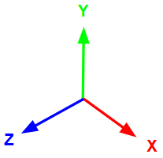
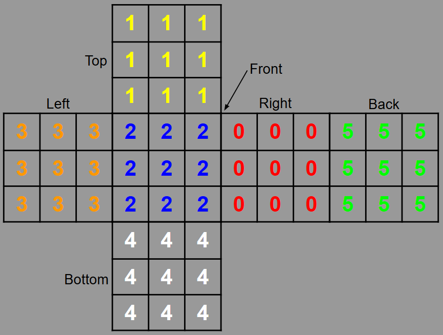
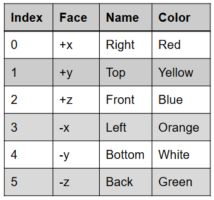
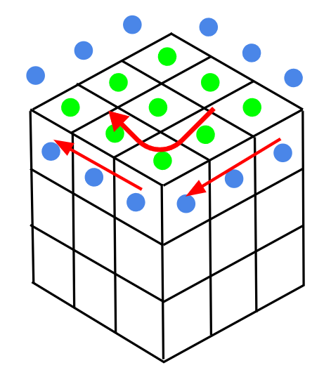
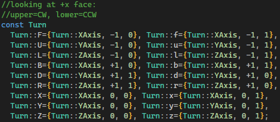

• Use the left cursor/ARROWS to orbit around.
• Press S to scramble the cube.
• Press HOME to reset the cube.
• Press F to turn the front face clockwise.
• Press U to turn the upper face clockwise.
• Press L to turn the left face clockwise.
• Press B to turn the back face clockwise.
• Press D to turn the down face clockwise.
• Press R to turn the right face clockwise.
• Hold SHIFT to instead turn counter clockwise.
For this project, I wanted to experiment with the user interaction and algorithmic solve of an NxN 3D twisty puzzle.
Assume the following coordinate system for this project:

I made the program with generalization in mind, so it can simulate an N*N. The current version of it is just the standard 3*3. The cube state is stored in memory as a 6*N*N grid of integers.

Storing them this way, they are called facelets. Those integers are designated as follows:

To turn the cube along an axis, the facelets along the slice and adjacent face must be accumulated: Take a clockwise turn about y: The blue dots are on the slice, and the green dots are on the face.

The program pre allocates temporary buffers of 4*N for the slice, and N*N for the face to store these facelet integers in. The slice is then rotated by N, left if clockwise, right if counter clockwise. The face is reindexed to rotate the integer grid.
To simplify these turns, I implemented Singmaster's notation in the form of static const members of the Turn class:

Note that the Turn class has three fields: axis, slice, and parity. using 1-based indexing, the integer slice packs more than just an index: A positive value means index forward from 0, whereas negative means index backward from num-1. A value of zero tells the entire cube to turn along that axis, useful for the initial orientation. This way I can use the same notation for NxN cubes; the index isnt hard-coded to the cube size. However, the notation for inner slices of larger cubes will still be cumbersome.
I am still working on the solving portion of this program.
I will first implement the beginner's method solve:
1. Orient the cube.
2. Make the bottom cross
3. Put corners into bottom layer
4. Put edges into middle layer
5. Orient the top cross
6. Permute the top cross
7. Orient the top corners
8. Permute the top corners
9. Profit